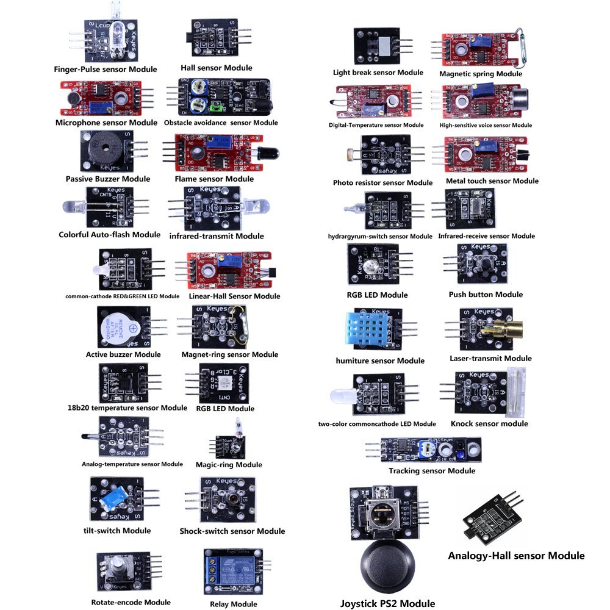
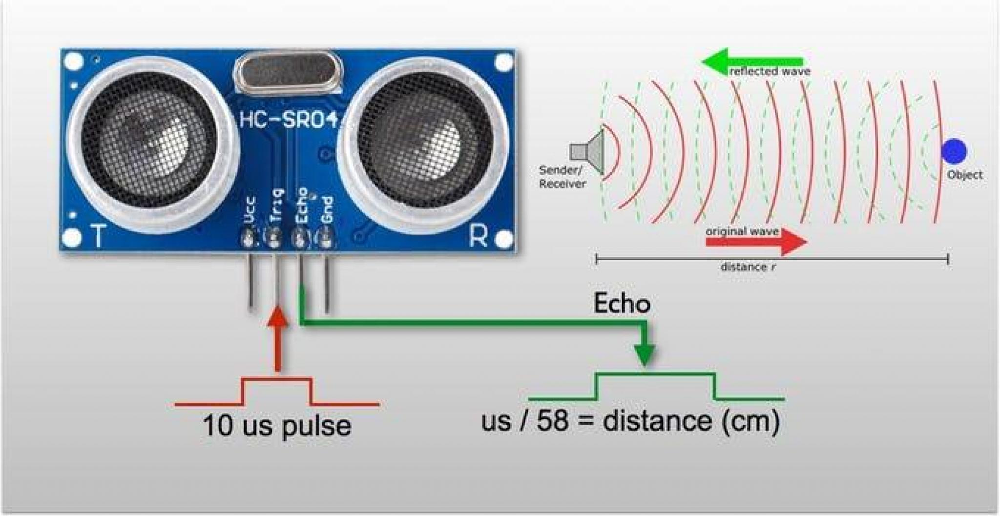
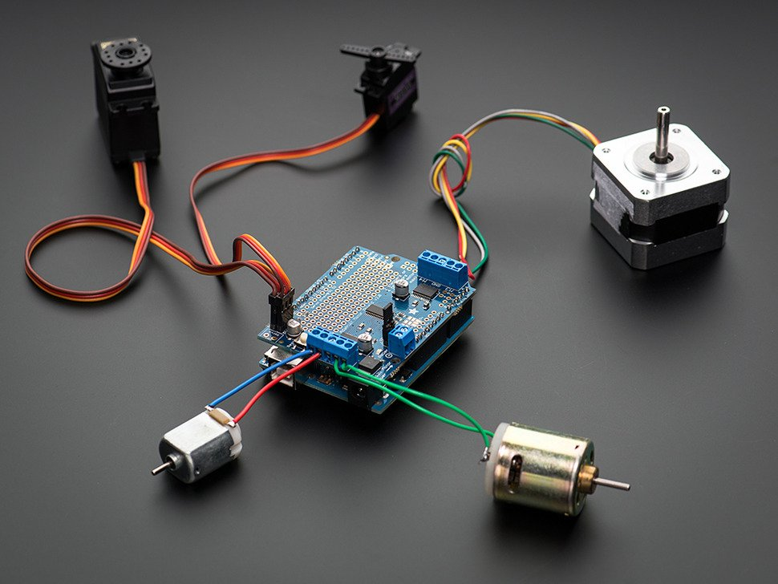
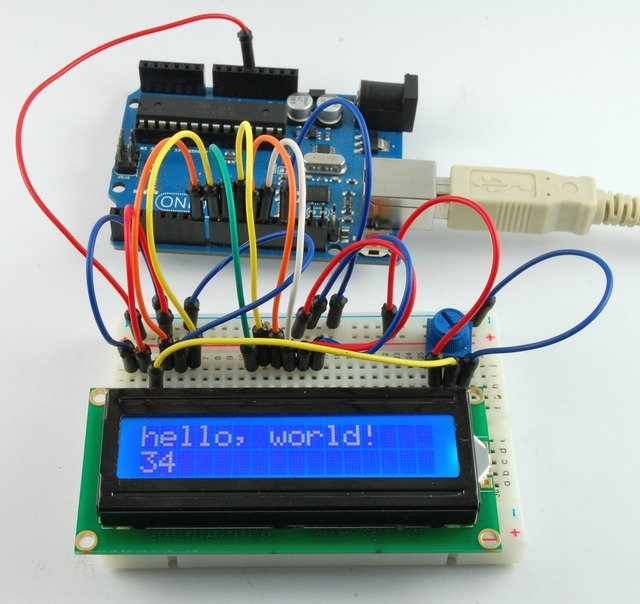

Sensores:

¿Qué son?: Microsistemas (Placas, módulos, componentes electrónicos), instalados junto a un soporte mecánico, recogen datos de tipo físico y/o químico del ambiente. Dependiendo del tipo de sensor.
¿Para qué sirven?: su función es la de recibir o captar información del ambiente/entorno y transmitir esa información al software, para que éste determine la acción que los actuadores realizaran. De acuerdo con el tipo de sensor, tomará uno o varios datos o aspectos distintos del ambiente.
¿Cómo Funcionan?: Se instalan en un lugar específico del robot, se los programa para trabajar con cierto aspecto del medio ambiente y este como si fuera un sentido de los que cuenta el ser humano, brinda información al software del robot para que éste realice una acción determinada.
Por ejemplo, si un sensor de ultra sonido (proximidad) es instalado al frente del robot, este constantemente emitirá ondas de sonido y cuando las ondas regresen en cierta intensidad informará al software que frente tiene un obstáculo, y así el programa indicará que acción tomar.
Algunos tipos de datos recupera del ambiente:
- Temperatura
- Humedad
- Fuerza
- Colores
- Objetos
- Intensidad luminosa
- Fuerza
¿Cuáles son los principales sensores en la robótica educativa?:

- Ultra sonido
- Detector de color
- Humedad
- Lumínico
- Temperatura
- Gases
- Barómetro
- Táctil / huellas dactilares
- Infra rojo
Actuadores:

¿Qué son?: dispositivo de tipo mecánico (Motores, Servos, parlantes, pantallas, lámparas, etcétera), instalados junto a los sensores, y mediante la indicación del software, éstos realizaran una acción mecánica (movimiento, fuerza, encender, apagar, aumentar, disminuir, etcétera) hacen funcionar al robot.
¿Para qué sirven?: su función es la de reaccionar o comunicarse con el medio. Desplaza o da acción según el software lo ordene.
Utiliza la energía para realizar distintas acciones:
- Mecánica (movimientos). Activando motores o servomotores
- Iluminación, (ilumina). Acciones de iluminación, acrecentar o menguar intensidad de luces
- Sonora (sonidos), emite sonidos en respuesta a alguna interacción con el medio
- Visual (visual), transmitir mediante una pantalla, imágenes o información que necesite comunicar
¿Cómo Funcionan?: Se instalan en un lugar específico del robot, toman energía del dispositivo y la convierten en un movimiento o acción, dependiendo del tipo de actuador el software es su controlador (activa o desactiva y regula).
¿Cuáles son los principales actuadores en la robótica educativa?:

- Motores à corriente continua
- Servomotoresà corriente alterna
- Pantallasàlcd
- Parlantes
- Lucesà (Led)